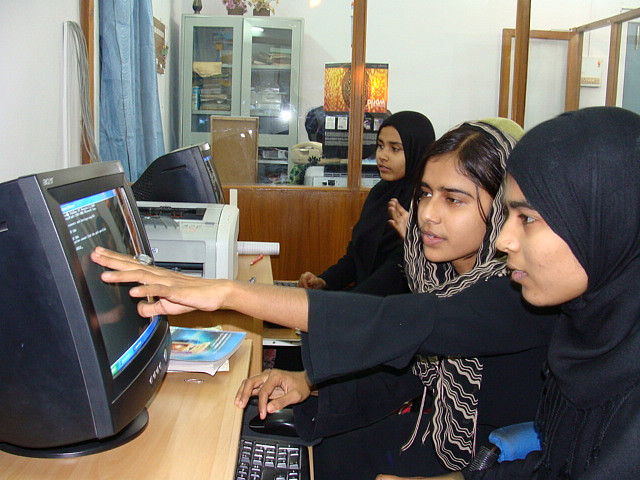
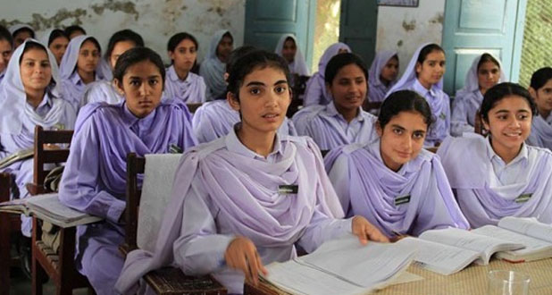
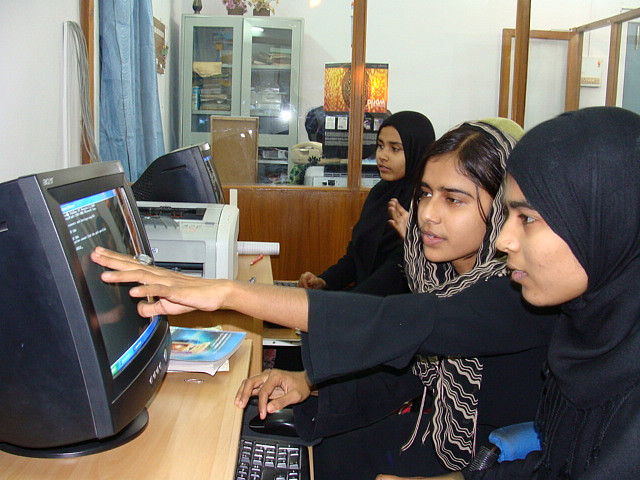
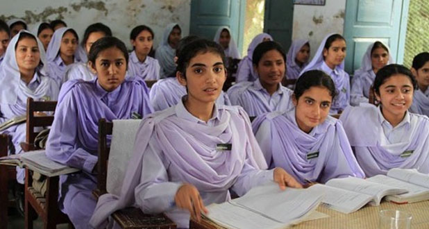

|
|
 



In recent years, India has made great strides in improving the status of women. The constitution bans discrimination, calls for equity between the sexes, and prohibits paying women lesser wages for the same work as men. Dowry has been outlawed, and government aid programs help women improve their lot. India even elected a female as its 12th president.
Although on paper it seems gender equity has been achieved, in practice, this is not the case. Women throughout India are often treated as second-class citizens. They have lower rates of school attendance and achieved grade level; higher rates of malnutrition, anemia, and mental disease; and earn 66% less in wages for the same jobs, as compared to men.1,2,3 Indian women also fall victim to domestic violence, traditionally do not own land, and frequently play no part in household decision-making. Attacks such as rape, acid throwing, and bride burning are too common, while traditions such as child marriage, dowry, and female infanticide have been difficult to extinguish.
The status of Indian women is further portrayed by beliefs surrounding the menstrual cycle. In some areas, when a woman is menstruating, she is viewed as a gateway to hell. During this time, women are considered unholy and frequently are forbidden from sleeping in the house, cooking, and having contact with others. Anything touched by her must be thrown out. If one accidentally comes into contact with a menstruating woman, s/he must seek purity by touching a cow, a holy being. Without the presence of a cow, a person may sprinkle themselves with cow urine or in other cases, take a bath.